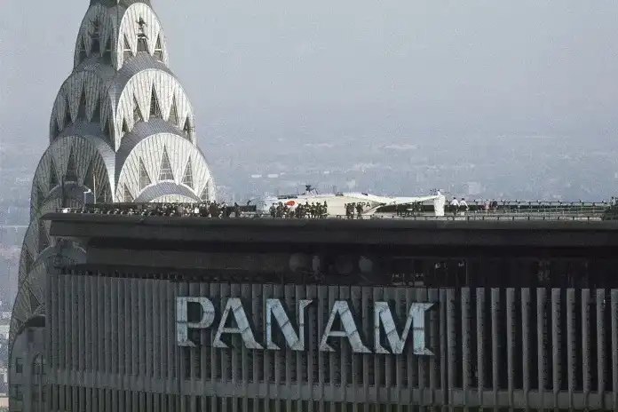
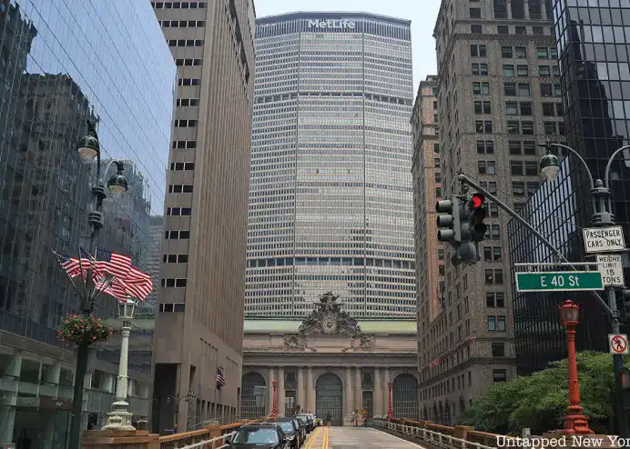

Conçu par Emery Roth & Sons avec la collaboration de Walter Gropius et Pietro Belluschi, le Pan Am Building est un exemple du Style international.
Avec sa forme de prisme en acier, béton prémoulé et verre1, il a été conçu dans un souci d'efficacité, avec ses vastes surfaces et son absence de décorations inutiles.

Son histoire
La tour a été commandée pour être le siège de PanAm Airways. Inaugurée officiellement le 7 mars 1963, la PanAm occupait à l'origine 15 étages, et elle est restée le siège de la PanAm même après que la Metropolitan Life Insurance Company a racheté le bâtiment en 1981. Plus tard, en 1992, lorsque PanAm a finalement été dissoute, le bâtiment a été rebaptisé MetLife.
Une autre caractéristique du bâtiment qui a été conservée est l'héliport situé sur le toit.

Sa conception
Le bâtiment, avec sa silhouette massive et puissante, domine la gare centrale et est exactement la moitié des park Avenue en fermant toute continuité visuelle.
La critique est évidemment axée sur Gropius et Belluschi, les prestigieux architectes qui ont provoqué l'aspect final.
Pressé par la critique sévère, Gropius a été forcé de se défendre 1965 les pages de Casabella, affirmant la dépendance de l'architecte sur le client, peu importe les besoins urbains de la communauté, et de nier en aucune façon les principes du grand mouvement architectural qui a donné une partie de la première poussée.
